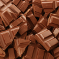

CHOCOLATE
El chocolate, originalente es cacao, hay quienes les gusta así, a otros les gusta el dulce en sí, en mi caso soy amante a este.

1
El chocolate es el alimento que se obtiene mezclando azúcar con dos productos que derivan de la manipulación de las semillas del cacao:
2
El chocolate nos hace muy felices. ...
El Cacao puede evitar la caries dental. ...